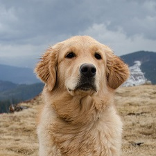

Artem Davydenko
CV
Contacts
Short info
Studied computer science at the Ш++ programming school, started in February 2020.
You can access my diploma by clicking on this icon: 
Finished the course in June 2021 and started studying Front-end at the same school. After that I enrolled for the EPAM Front-end course in September 2020.
Skills
Some tasks I accomplished by now
Language skills
English
German
Miscellaneous
Although it does not seem to be front-end developnment relevant information, I have a dog, a golden retriever named Busia. It seems the two things she likes doing above all are swimming and running after birds.
